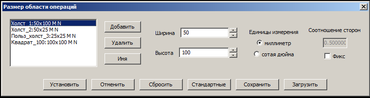

Все доступные для установки габариты холстов можно разделить на две группы - стандартные и нестандартные (пользовательские). Данный диалог позволит вам сформировать и настроить свою собственную коллекцию пользовательских холстов, которые потом будут доступны для быстрой установки посредством пунктов подменю "Холст/Тип/Пользовательские холсты".
Прежде всего, в списке 1 отображается вся текущая коллекция холстов, образованная вами на текущий момент времени. Каждому из ниих соответствует одна строка списка, в которой выводится его символическое имя, текущие размеры, а также единица их измерения (M для миллиметров, I для точек - сотых дюйма) и режим фиксации пропорций (N - пропорции произвольные, F - фиксированные). Выбор какой-либо из строк списка "активизирует" соответствующий холст, перенося его параметры в поля редактирования (вертуны 5 и 6, радиокнопки 7, поле ввода 8 и крыжик 9) и позволяя, тем самым, их изменить.
Изменить же сам состав холстов текущей коллекции позволяют кнопки 2, 3 и 4. Кнопка 2 "Добавить" добавляет в коллекцию новый холст, кнопка 3 "Удалить" удаляет из списка (и коллекции) его текущий элемент, наконец, кнопка 4 "Имя" позволяет назначить или отредактировать символическое имя, присвоенное холсту. Сразу после создания холст его не имеет.
Далее по порядку в диалоге располагаются упомянуте выше "поля редактирования" и кнопка 13 "Стандартные", которые позволяют несколькими способами установить основные параметры каждого нестандартного холста - его размеры. Прежде всего, для этого в составе диалога предусмотрены два вертуна 5 и 6 (для ввода ширины и высоты холста соответственно). Их можно ввести непосредственно в поля ввода этих вертунов, а также откорректировать, используя принадлежащие вертунам кнопки "Больше" и "Меньше". Размеры всегда представляют собой целые числа, задаваемые в одной из двух возможных единиц измерения длины - миллиметрах и сотых дюйма. Выбор конкретной используемой единицы выполняется посредством блока радиокнопок 7.
Есть возможность зафиксировать определённую пропорцию между габаритами холста - шириной и высотой. Для этого нужно ввести их соотношение в поле ввода 8 и активировать крыжик 9. После этого при любом изменении любого габарита любым способом другой размер будет автоматически пересчитываться, исходя из указанного коэффициента.
Наконец, можно выбрать и один из стандартных форматов. Для этого следует нажать кнопку 13 "Стандартные", а затем применить один из пунктов всплывшего меню, содержащего все предопределённые в программе стандартные размеры холстов. Среди них будет и пункт "Текущий формат", который установит для активного холста коллекции такие характеристики его размера, которые настроены в данный момент для текущего холста в основном просмотровом окне программы.
Кнопка 10 "Установить" переносит сделанные установки в программу и закрывает окно. Кнопка же 11 "Отменить" закрывает окно, но отменяя и не сохраняя новые настройки холста. После нажатия этой кнопки коллекция пользовательких холстов сохранит те параметры, которые она имел до вызова данного диалога.
Ещё один не описанный ранее орган управления, кнопка 12 "Сбросить", не закрывает окно и работа с диалогом продолжится. Но все его настройки будут сброшены в начальное состояние, такое, которое имела коллекция перед активацией диалога. Наконец, две завершающие кнопки 14 и 15 диалога служат для сохранения сформированной коллекции в отдельный файл (кнопка 14 "Сохранить"), который затем можно вновь загрузить из ранее сделанного файла сохранения (кнопка 15 "Загрузить").